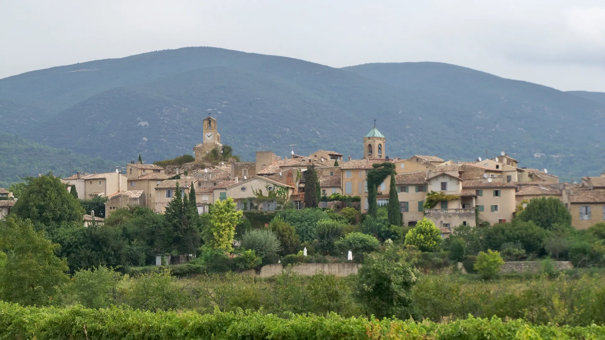
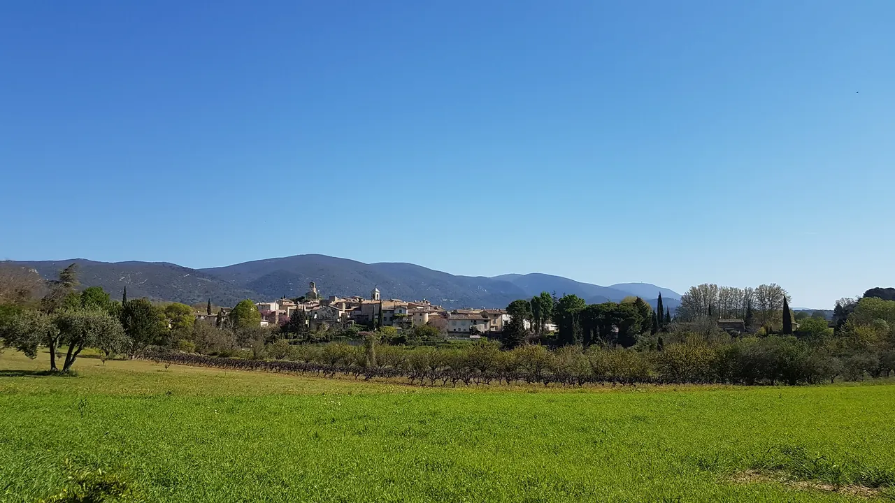

{kind=link}
.jpg){kind=link}

Abbaye de Sénanque
Gordes 북쪽 좁은 계곡의 12세기 Cistercian 수도원. 화려함보다 절제된 로마네스크 건축과 침묵의 공간이 핵심이다.

뤼베롱 남쪽 관문에 자리한 마을로, 깎아지른 절벽 위에 서 있는 고르드(Gordes)나 보니외(Bonnieux)와 달리 완만하고 평탄한 지형에 자리 잡아 보행이 편안하고 활기가 넘치는 세련된 문학 마을이다.
노벨문학상 수상 작가 알베르 카뮈(Albert Camus)가 1958년 정착하여 집필 활동을 하다가 잠든 곳으로, 카뮈가 매일 신문을 읽던 카페 드 로르모(Café de l'Ormeau)와 단골 식당이 골목에 고스란히 남아 있다.
마을 서쪽에는 15세기 말 고딕 양식에서 16세기 르네상스 양식으로 증축된 프로방스 최초의 르네상스 성채(Château de Lourmarin)가 올리브 나무 숲과 포도밭 사이에 우아하게 서 있다.
"언덕을 오르내리는 고된 등반 없이, 플라타너스 그늘 아래 카페 테라스와 감각적인 부티크 골목을 여유롭게 거닐며 카뮈의 문학적 자취를 느끼기에 뤼베롱에서 가장 완벽한 마을이다." 묘지에서 소박한 카뮈의 무덤에 조약돌을 얹고, 르네상스 성 외관과 뒤편 올리브밭을 산책한 뒤 마을 중심 카페에서 에스프레소를 즐기는 60~90분 코스가 이상적이다.
| 운영시간 | 성 5~9월 10:30~18:45, 최종 입장은 폐관 45분 전 |
|---|---|
| 휴무 | 마을 상시 개방·휴무 없음. 장날은 금요일 오전(연중) — 그 외 요일 시장 없음. 4~10월 화요일 17:00부터 La Fruitière Numérique 에서 소규모 생산자 장터 추가 |
| 예약 | 개인 방문 예약 불필요. 12인 이상 단체 가이드투어만 사전 예약(불어 6.5유로·영어 8유로/인) |
| 메모 | Lourmarin des Carnets 2026-09-12~13 · 50 carnettistes |
Day 16의 첫 MUST다. 10:00 전후 도착해 12:15까지 걷고 13:30까지 점심을 마친 뒤, Optional 마을 수를 결정한다.
| 항목 | 상세 정보 |
|---|---|
| 위치 | 84160 Lourmarin, Vaucluse |
| 마을 입장/요금 | 상시 개방 / 무료 (묘지 무료 개방) |
| 르네상스 성 | 매일 10:30–18:30 (계절별 상이) / 성인 €7.50, 할인 €5.00 (외관 정원 무료 조망) |
| 추천 주차장 | Parking du Rayol (D943 진입로, 도심 도보 3분, 대형 무료/유료 주차장) 또는 Parking de la Rivière |
| 시장 (Market) | 매주 금요일 오전 (08:00–13:00): 뤼베롱 최대 규모의 활기찬 종합 시장 (금요일 오전은 극심한 주차 정체 주의) |
| 도로 접근 | Aix-en-Provence에서 D943 도로를 타고 뤼베롱 협곡(Combe de Lourmarin)을 넘어 약 40분 소요 / 도로가 넓고 평탄하여 운전 난이도 낮음 |

Gordes 북쪽 좁은 계곡의 12세기 Cistercian 수도원. 화려함보다 절제된 로마네스크 건축과 침묵의 공간이 핵심이다.

Petit Luberon 북사면을 따라 층층이 올라가는 언덕마을. 정상의 오래된 교회에서 Lacoste와 Calavon 계곡을 바라보는 전망이 핵심이다.

뤼베롱 현지 농부들이 직접 재배하고 만든 신선 농산물과 특산품을 판매하는 생산자 직거래 일요 시장. 이번 Day 16–18 일정에는 넣지 않은 지역 참고 Place다.

바위 언덕 위에 석회암 집들이 층층이 매달린 Luberon의 대표 이미지. 진입도로 파노라마와 해질 무렵의 돌빛이 핵심이다.

대형 관광버스가 닿지 않아 뤼베롱에서 가장 고요하고 평화로운 '숨겨진 보석' 마을. 언덕 정상의 17세기 예루살렘 풍차(Moulin de Jérusalem)와 현지인들의 정겨운 일상이 살아있는 골목길.

Bonnieux 맞은편 언덕에 붙은 작은 석조마을. 중세 성벽 골목과 Marquis de Sade로 알려진 성터가 마을의 성격을 만든다.